<!DOCTYPE html>
<html lang="hu">
<head>
    <meta charset="UTF-8" />
    <meta name="viewport" content="width=device-width, initial-scale=1.0" />
    <title>Egyéb manőverek – „C” kategória - Közlekedési alapismeretek</title>
    <meta property="og:site_name" content="KRESZ teszt &ndash; „C” kategória - Közlekedési alapismeretek" />
    <meta property="og:description" content="Egyéb manőverek kérdések és helyes válaszok („C” kategória - Közlekedési alapismeretek)" />
    <link rel="stylesheet" href="../test.css" />
</head>
<body>
    <div class="topic-header">
        <nav class="topic-breadcrumbs">
            <a href="index.html" class="crumb-link">&laquo; „C” kategória - Közlekedési alapismeretek témakörei</a>
            <span class="crumb-sep">/</span>
            <span class="crumb-current">Egyéb manőverek</span>
            <span class="crumb-sep">/</span>
            <a href="../../index.html" class="crumb-home">Interaktív teszt &raquo;</a>
        </nav>

        <div class="topic-title-section">
            <span class="topic-badge">Témakör 12 / 25</span>
            <h2>Egyéb manőverek <small class="topic-badge-info">(64 kérdés, vizsgán: 1 db., 1 pont)</small></h2>
        </div>

        <div class="topic-nav-bar">
            <a href="group-1668661099.html" class="nav-btn nav-prev-btn" title="Irányváltoztatás, jelzések">&laquo; Előző témakör</a>
            <a href="index.html" class="nav-btn nav-hub-btn">Témakörök listája</a>
            <a href="group-1668661246.html" class="nav-btn nav-next-btn" title="Párhuzamos közlekedés">Következő témakör &raquo;</a>
        </div>
    </div>

    <div class="group" id="group-1668661113">
        <div class="questions">
            <div class="question" id="question-703493">
                                                                        <!-- <h4>465. Kell-e megfelelő oldaltávolságot tartani az egymás mellett ellentétes irányban elhaladó járművek között?</h4> -->
                        <dl>
                            <dt>465. Kell-e megfelelő oldaltávolságot tartani az egymás mellett ellentétes irányban elhaladó járművek között? <a href="#question-703493"><small>#703493</small></a></dt>
                                                            <dd class="correct">Igen.</dd>
                                                            <dd class="">Nem.</dd>
                                                    </dl>
                    </div>
                                                            <div class="question" id="question-703494">
                                                                        <!-- <h4>466. Hogyan kell az egymással szemben haladó járművek vezetőinek egymástól biztonságos oldaltávolságot tartani?</h4> -->
                        <dl>
                            <dt>466. Hogyan kell az egymással szemben haladó járművek vezetőinek egymástól biztonságos oldaltávolságot tartani? <a href="#question-703494"><small>#703494</small></a></dt>
                                                            <dd class="correct">Szükség esetén kölcsönösen az úttest széléhez kell húzódniuk.</dd>
                                                            <dd class="">Szükség esetén egyiküknek az úttest széléhez kell húzódni.</dd>
                                                            <dd class="">Szükség esetén egyiküknek meg kell állni.</dd>
                                                    </dl>
                    </div>
                                                            <div class="question" id="question-703495">
                                                                        <!-- <h4>467. Hogyan kell lehetővé tenni a keskeny úttesten szükséges kitérés végrehajtását?</h4> -->
                        <dl>
                            <dt>467. Hogyan kell lehetővé tenni a keskeny úttesten szükséges kitérés végrehajtását? <a href="#question-703495"><small>#703495</small></a></dt>
                                                            <dd class="correct">Megállással, útpadkára húzódással vagy hátramenettel.</dd>
                                                            <dd class="">Csak megállással.</dd>
                                                            <dd class="">Csak hátramenettel.</dd>
                                                    </dl>
                    </div>
                                                            <div class="question" id="question-703496">
                                                                        <!-- <h4>468. Melyik járművel kell hátramenetet végezni, ha a kitérés az úttest méretei miatt nem lehetséges?</h4> -->
                        <dl>
                            <dt>468. Melyik járművel kell hátramenetet végezni, ha a kitérés az úttest méretei miatt nem lehetséges? <a href="#question-703496"><small>#703496</small></a></dt>
                                                            <dd class="correct">Amelyikkel ez könnyebben megtehető.</dd>
                                                            <dd class="">Amelyik később érkezett a helyszínre.</dd>
                                                            <dd class="">Amelyik előbb fog a későbbiekben elkanyarodni.</dd>
                                                    </dl>
                    </div>
                                                            <div class="question" id="question-703498">
                                                                        <!-- <h4>469. Az egy forgalmi sávra szűkülő úttesten szembejövő járművek találkoznak. Melyiküknek van elsőbbsége?</h4> -->
                        <dl>
                            <dt>469. Az egy forgalmi sávra szűkülő úttesten szembejövő járművek találkoznak. Melyiküknek van elsőbbsége? <a href="#question-703498"><small>#703498</small></a></dt>
                                                            <dd class="correct">Ha a közúti jelzésekből más nem következik, akkor annak a járműnek, amelyik irányváltoztatás nélkül tud továbbhaladni.</dd>
                                                            <dd class="">Ha a közúti jelzésekből más nem következik, akkor annak a járműnek, amelyik irányváltoztatással tud továbbhaladni.</dd>
                                                            <dd class="">Minden esetben a nagyobb járműnek van elsőbbsége.</dd>
                                                    </dl>
                    </div>
                                                            <div class="question" id="question-703499">
                                                                        <!-- <h4>470. Hogyan szabad a járművel megfordulni az alábbiak közül?</h4> -->
                        <dl>
                            <dt>470. Hogyan szabad a járművel megfordulni az alábbiak közül? <a href="#question-703499"><small>#703499</small></a></dt>
                                                            <dd class="correct">Úgy, hogy megfordulás közben a többi jármű és az úttesten haladó gyalogosok közlekedését ne akadályozza.</dd>
                                                            <dd class="">Úgy, hogy megfordulás közben a többi jármű és az úttesten haladó gyalogosok közlekedését ne zavarja.</dd>
                                                            <dd class="">Úgy, hogy megfordulás közben az úttesten haladó gyalogosok közlekedését ne zavarja, a járműforgalom akadályozása azonban megengedett.</dd>
                                                    </dl>
                    </div>
                                                            <div class="question" id="question-703500">
                                                                        <!-- <h4>471. Szabad-e a járműforgalmat akadályozni, amikor a várakozóhelyre történő beálláshoz szükséges hátramenetet végzi?</h4> -->
                        <dl>
                            <dt>471. Szabad-e a járműforgalmat akadályozni, amikor a várakozóhelyre történő beálláshoz szükséges hátramenetet végzi? <a href="#question-703500"><small>#703500</small></a></dt>
                                                            <dd class="correct">Rövid ideig szabad.</dd>
                                                            <dd class="">Nem.</dd>
                                                            <dd class="">Ez esetben a hosszabb időtartamú akadályozás is megengedett.</dd>
                                                    </dl>
                    </div>
                                                            <div class="question" id="question-703501">
                                                                        <!-- <h4>472. Szabad-e vasúti átjáróban járművel megfordulni?</h4> -->
                        <dl>
                            <dt>472. Szabad-e vasúti átjáróban járművel megfordulni? <a href="#question-703501"><small>#703501</small></a></dt>
                                                            <dd class="correct">Nem.</dd>
                                                            <dd class="">Igen.</dd>
                                                    </dl>
                    </div>
                                                            <div class="question" id="question-703502">
                                                                        <!-- <h4>473. Szabad-e autópályán járművel hátramenetet végezni?</h4> -->
                        <dl>
                            <dt>473. Szabad-e autópályán járművel hátramenetet végezni? <a href="#question-703502"><small>#703502</small></a></dt>
                                                            <dd class="correct">Nem.</dd>
                                                            <dd class="">Igen.</dd>
                                                    </dl>
                    </div>
                                                            <div class="question" id="question-703503">
                                                                        <!-- <h4>474. Szabad-e előzni, ha az előzés a szembejövő forgalmat zavarja?</h4> -->
                        <dl>
                            <dt>474. Szabad-e előzni, ha az előzés a szembejövő forgalmat zavarja? <a href="#question-703503"><small>#703503</small></a></dt>
                                                            <dd class="correct">Nem.</dd>
                                                            <dd class="">Igen.</dd>
                                                    </dl>
                    </div>
                                                            <div class="question" id="question-703504">
                                                                        <!-- <h4>475. Szabad-e előzni, ha az előzni kívánó jármű előzését már egy másik jármű megkezdte?</h4> -->
                        <dl>
                            <dt>475. Szabad-e előzni, ha az előzni kívánó jármű előzését már egy másik jármű megkezdte? <a href="#question-703504"><small>#703504</small></a></dt>
                                                            <dd class="correct">Nem.</dd>
                                                            <dd class="">Igen.</dd>
                                                    </dl>
                    </div>
                                                            <div class="question" id="question-703505">
                                                                        <!-- <h4>476. Szabad-e előzni, ha a megelőzni kívánt jármű előzési szándékot jelzett?</h4> -->
                        <dl>
                            <dt>476. Szabad-e előzni, ha a megelőzni kívánt jármű előzési szándékot jelzett? <a href="#question-703505"><small>#703505</small></a></dt>
                                                            <dd class="correct">Nem.</dd>
                                                            <dd class="">Igen, ha még nem kezdte meg az előzést.</dd>
                                                    </dl>
                    </div>
                                                            <div class="question" id="question-703506">
                                                                        <!-- <h4>477. Szabad-e előzni, ha az előzés során a megelőzendő jármű mellett nem lehet megfelelő oldaltávolságot tartani?</h4> -->
                        <dl>
                            <dt>477. Szabad-e előzni, ha az előzés során a megelőzendő jármű mellett nem lehet megfelelő oldaltávolságot tartani? <a href="#question-703506"><small>#703506</small></a></dt>
                                                            <dd class="correct">Nem.</dd>
                                                            <dd class="">Igen, de csak az egy nyomon haladó járművek előzése esetén.</dd>
                                                            <dd class="">Igen, de csak motorkerékpárral.</dd>
                                                    </dl>
                    </div>
                                                            <div class="question" id="question-703507">
                                                                        <!-- <h4>478. Szabad-e előzni, ha az előzés befejezése után a megelőzött jármű elé csak annak zavarásával tud visszatérni?</h4> -->
                        <dl>
                            <dt>478. Szabad-e előzni, ha az előzés befejezése után a megelőzött jármű elé csak annak zavarásával tud visszatérni? <a href="#question-703507"><small>#703507</small></a></dt>
                                                            <dd class="correct">Nem.</dd>
                                                            <dd class="">Igen, mert ebben az esetben csak az akadályozás tilos.</dd>
                                                            <dd class="">Igen, de csak motorkerékpárral.</dd>
                                                    </dl>
                    </div>
                                                            <div class="question" id="question-703508">
                                                                        <!-- <h4>479. Kell-e az előzési szándékot irányjelzéssel jelezni?</h4> -->
                        <dl>
                            <dt>479. Kell-e az előzési szándékot irányjelzéssel jelezni? <a href="#question-703508"><small>#703508</small></a></dt>
                                                            <dd class="correct">Igen, ha az irányváltoztatással jár.</dd>
                                                            <dd class="">Igen, minden esetben.</dd>
                                                            <dd class="">Igen, de csak sűrű forgalom esetén.</dd>
                                                    </dl>
                    </div>
                                                            <div class="question" id="question-703509">
                                                                        <!-- <h4>480. Milyen irányból szabad az előzést végrehajtani?</h4> -->
                        <dl>
                            <dt>480. Milyen irányból szabad az előzést végrehajtani? <a href="#question-703509"><small>#703509</small></a></dt>
                                                            <dd class="correct">Általában balról.</dd>
                                                            <dd class="">Csak balról.</dd>
                                                            <dd class="">A járművezető szabad döntésétől függően balról és jobbról egyaránt.</dd>
                                                    </dl>
                    </div>
                                                            <div class="question" id="question-703510">
                                                                        <!-- <h4>481. Milyen irányból szabad megelőzni az úttest közepén lévő pályán közlekedő villamost?</h4> -->
                        <dl>
                            <dt>481. Milyen irányból szabad megelőzni az úttest közepén lévő pályán közlekedő villamost? <a href="#question-703510"><small>#703510</small></a></dt>
                                                            <dd class="correct">Csak jobbról.</dd>
                                                            <dd class="">Csak balról.</dd>
                                                            <dd class="">Jobbról és balról egyaránt.</dd>
                                                    </dl>
                    </div>
                                                            <div class="question" id="question-703511">
                                                                        <!-- <h4>482. Milyen irányból szabad megelőzni a balra bekanyarodási szándékát irányjelzéssel jelző és ennek megfelelően elhelyezkedő járművet?</h4> -->
                        <dl>
                            <dt>482. Milyen irányból szabad megelőzni a balra bekanyarodási szándékát irányjelzéssel jelző és ennek megfelelően elhelyezkedő járművet? <a href="#question-703511"><small>#703511</small></a></dt>
                                                            <dd class="correct">Csak jobbról.</dd>
                                                            <dd class="">Csak balról.</dd>
                                                            <dd class="">Jobbról és balról egyaránt.</dd>
                                                    </dl>
                    </div>
                                                            <div class="question" id="question-703513">
                                                                        <!-- <h4>483. Szabad-e jobbról megelőzni a figyelmeztető jelzést használó járművet?</h4> -->
                        <dl>
                            <dt>483. Szabad-e jobbról megelőzni a figyelmeztető jelzést használó járművet? <a href="#question-703513"><small>#703513</small></a></dt>
                                                            <dd class="correct">Igen, de csak a többi jármű és a gyalogosok veszélyeztetése nélkül.</dd>
                                                            <dd class="">Nem.</dd>
                                                            <dd class="">Igen, de csak a többi jármű és a gyalogosok zavarása nélkül.</dd>
                                                    </dl>
                    </div>
                                                            <div class="question" id="question-703810">
                                                                            <div class="exercise-image">
                                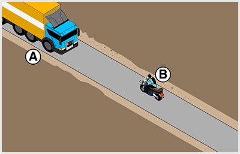
                            </div>
                                                <!-- <h4>484. Mindkét jármű köteles az útpadkára lehúzódni a képen látható helyen, hogy egymás továbbhaladását biztosítani tudják?</h4> -->
                        <dl>
                            <dt>484. Mindkét jármű köteles az útpadkára lehúzódni a képen látható helyen, hogy egymás továbbhaladását biztosítani tudják? <a href="#question-703810"><small>#703810</small></a></dt>
                                                            <dd class="correct">Igen.</dd>
                                                            <dd class="">Nem, csak az ’A’ jelű tehergépkocsi.</dd>
                                                            <dd class="">Nem, csak a ’B’ jelű motorkerékpár.</dd>
                                                    </dl>
                    </div>
                                                            <div class="question" id="question-703811">
                                                                            <div class="exercise-image">
                                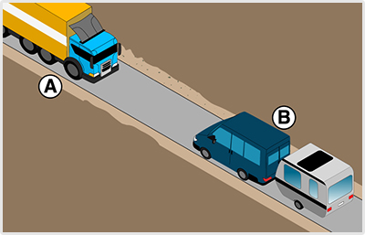
                            </div>
                                                <!-- <h4>485. Mindkét jármű köteles az útpadkára lehúzódni a képen látható helyen, hogy egymás továbbhaladását biztosítani tudják?</h4> -->
                        <dl>
                            <dt>485. Mindkét jármű köteles az útpadkára lehúzódni a képen látható helyen, hogy egymás továbbhaladását biztosítani tudják? <a href="#question-703811"><small>#703811</small></a></dt>
                                                            <dd class="correct">Igen.</dd>
                                                            <dd class="">Nem, csak az ’A’ jelű tehergépkocsi.</dd>
                                                            <dd class="">Nem, csak a ’B’ jelű járműszerelvény.</dd>
                                                    </dl>
                    </div>
                                                            <div class="question" id="question-703812">
                                                                            <div class="exercise-image">
                                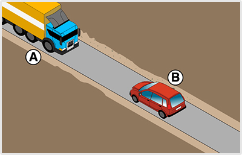
                            </div>
                                                <!-- <h4>486. Hogyan kötelesek a képen látható helyen a járművek egymás továbbhaladását biztosítani?</h4> -->
                        <dl>
                            <dt>486. Hogyan kötelesek a képen látható helyen a járművek egymás továbbhaladását biztosítani? <a href="#question-703812"><small>#703812</small></a></dt>
                                                            <dd class="correct">A járművekkel meg kell állni, és az elhaladást az útpadkára húzódással vagy hátramenettel kell lehetővé tenni.</dd>
                                                            <dd class="">Egy harmadik forgalomirányító személy közreműködésével.</dd>
                                                            <dd class="">Az ’A’ jelű tehergépkocsi köteles az útpadkára húzódni, hogy a ’B’ jelű gépkocsi az úttesten akadálytalanul tudjon továbbhaladni.</dd>
                                                    </dl>
                    </div>
                                                            <div class="question" id="question-703813">
                                                                            <div class="exercise-image">
                                
                            </div>
                                                <!-- <h4>487. Mindkét jármű köteles az útpadkára lehúzódni a képen látható helyen, hogy egymás továbbhaladását biztosítani tudják?</h4> -->
                        <dl>
                            <dt>487. Mindkét jármű köteles az útpadkára lehúzódni a képen látható helyen, hogy egymás továbbhaladását biztosítani tudják? <a href="#question-703813"><small>#703813</small></a></dt>
                                                            <dd class="correct">Igen.</dd>
                                                            <dd class="">Nem, csak az ’A’ jelű tehergépkocsi.</dd>
                                                            <dd class="">Nem, csak a ’B’ jelű gépkocsi.</dd>
                                                    </dl>
                    </div>
                                                            <div class="question" id="question-703814">
                                                                            <div class="exercise-image">
                                
                            </div>
         �  b           $!0�                    <!-- <h4>4x8.�el;ik!jG�rm�1 v��gezzeN �ӡtramenetet q +˩pen�d��pható `eLme.$ amenny�b�, a továbbhaladá3t Bsak hátramenettel lehet`bi[|oSǭtani?</h4> -->
 � 0`  0 `* (! ! �      <dl>
    `   !$�0"     " *!(!  0<$|>�8�| OmlqiK$h��}Ű ��)gu9:�N 蓡t�amn�dTv$q képen láthat÷ xglyen, amennyiben a továbbHa�qdb�s6 csa# H�tramenettel lGh�e biztosǭdcni?�<ajhRaf="#quesvigo
��(14"><sma,h~53814</small></a></dt>
        ! �          �0        ! �        ! �           ( `d class=c�brectb�A���B’�je.ű gépkocsi.</de>�
      0 `(                           `   ! � !$�0"$ 0b   <dd chacq="">Az ’A’ hedı tehergépk/cs4,did>
     `     (   0"      �  b  � �b b""()!      ( $<�dl�
b     `            </dif>M    ( @ �0        0 `(0 `(                  ( $0 `(      0<$Aw���aws- questiol"*hl<"su�rT+�~-703811"&*$        ! �   0 `(                  �  b                          " (! 0 `4div"cd`ss="exerCi�u-image">
           `      � �b�b b   " 
+  ( $ ! �    ( &()!       </div>
J`   �  b       0 p(p(`(                       <!-- <h4>489. 	ivGKǩt jápm��(j��teMes az útpadkára leh��۳Dji a kèp�n láth`tG� helyen, hogy egymás tO�C� bla|cdás�!t  iztowývani tudják?</h4> -->
�  b               $ 0"  8d|<
                            <dt>48�. indkët(kármű köteles az útpadkára lehúz��dOi a képen látható He�ien, hogy egymás toV�!vbh#ladáaé} Ciztosítani tudjáj?�<a h2ef"#qee3|ion-703815#>�small>#703815</soadm></a></dt6
*$ " (!     `                    �  C                       =d� class="correct">Igen&<pd~ (!  �  j $       0 `(                   �0     $ 0"  �0 <dd cla3s=">Nem, csao qx ’A’ jelų |d�er%épkocsi.</dd>
     $ 0"   �  b             0 `(         $ 0"      `  b (<d` snasq=(#6Oem, csac A$’��� jul�� járműsje2mlvén�.<mdd>
                  0 `(          �" j!         ( $  </Dl��      0 `(   ! �    8/tkv>� B$                            "0(a, 0"     ! �           ` <Eiv class=�qu'rt�on" id}"qTestikn=503816">
                     �0  �d r        ` !�                                <div c�as1="eye�cise-imagg"6
                  $ 0"  `      
  ! �                    `  /div>
        $ 0"    $ 0"                  $ 0"`   <�?
(�x4>490. Mindkét jármű kötglmr az út�a�)��ra!l��ú8ódni a képgn(mátható He�ien, hogy egymás továbbhaladását biztosítani 4u�C�)?</h4~ ->
             $ 2"(!$ 0" <dl>	
 "`(                   0 `( <�t>v90. Minfk˨t jC�r+š"kö|eLas az(��ppdk�zaheH�:jód�i # kө0mn l��8at�$xm.in, hogy egyM�!c továbbhaladását b�zt-sítani tudják?<�0href="#question
7�#816"��qll>#703x16'sMelm>�/�><mdt�
b             " (�  b            ! �               0 `(     �ddbclass-"#grrect">Igeo.�+dt<
  �0            ( $�   " (! $ 0"�  b " (!    "!(�         <df kmasw=2 >Nem, Cs�{�a:z���A’ jelŵ dghergépkc3a.</td~
         �0 �0�0�  b      � �b`b ! �     !(�$�  b    ( \`dclass}""Nem,csak a ℙR��� jelű jñr-ͱszerelvény.</dd<
!" (!           ! � $       0 ` �0            00`h4/dl>
       `      ! ���<e.IR:
          $ 0"�  b          �  b     $ 0"                   <div glqqs="question" id�"q7estion-7031�2>
 ! �( $  `                                   �0       �  b! �            <�ivbgl�us %percIs�=im`g�">
      " (!  $ 0"  $ 0"          /data/asset/237105.jpg" />
        $ 0"    ( $        </d��>OH                   �0                       �0<!-- <h4>491* ]kndkét jármű kötele{ A~ útpadj�%ra hex��zódni a k˩Pan lC�t*ató helyeo��H)gy egymás�to4ábbhaLa�ӡsát biztos˭Teny 4}djáo?,-h4> -->
(!! �         ( $      <dl>
   � $b0"           !��0   <dt>491. Mindké4 j�rmű köteles �~0��dradkára leh��zÒdni a k��xdn làv�iuó helyen4 cgy$ew{m��{!továbbhaladását biztosítani tudják? <a!h�ef=2#1}us4aon-3�#:s7"><s}a,d<#?13817</smal�:<}c></dt>
                                 ( $                      �<d& class="cgrRact">Iggn&=/td~
" �! b        �  c �          `  `   0!`�  �0�  b    `  <dd class="�~N'L, csak a{ f��A’ jelű teherw���{ocsi.</dd>
               $ 0" ! � $`(     0 `(                       <dd class=2"~Fem, csak a ’B’ jelű autóbusz.</dd>
 �           �0 ! � �  b   " (!                    </dl>
       ! �`  "$�&|'div>
  ! �  ( $                              ` $A0"            <div clesc?"quesdi/f"(iD9"question-7168>9">
   `                              $ 0"     � �0         " (!         <)-
$<h4>492.!S�ajaD)e kijdlG�mt�gyeleos-átkelőhelyen j�!rm��vdl�megforduloi�</h4> -->0"0"    �  b           8e|�	
8"$ " (!    0 `(`" 	!      <dt>490.(Sz�bad-e kijelölt gyalogos-átkeL�xelyen járm��fgl megforfudoi? <a href="#qte�tion-714x6�,small>#714868</small></a></tt~
        $ 0"                        $ 0"�  b  " (!      �0 <dd class=rb/�rect">Igen&<`d~�
b             �0                 ""()!                    <dd class="">Nem.</dd>
   ! �                 �0        0 `(              </dh>     `     (     </div6
*$  " (!     `                           ! �                <ei� chacq="question" id="questioo-�14869">
  ( $  ` !�  A       $ 0" �  b                " (!  �0              <!/-(=h4>493. Szabad-a Ӹtker%szUezœd˨s�enbjárműveh x��tramenete4 v�gezni?</h4> -->
  `             ` ($ <dl>
      �0               �  b<dt>41;Wzabad-e útkereszteződësjdn járműwe�(h�dr!eenetev ~©ge{n� <@ hr%f=#Qqestion-71486"�,small>#714869</smql,6</a></dt>
           $ 0"     " (!             "�    0 `(   `      ` <Ed class="correct">Igen.</dd>
                 " (!  � 0`                       !!��      <dd sl!{s="">Nem.<odd
   `                                     �0       </fl6
    ! � $ 0"        </div>
$             " (!                 ( $�  b  �0           <div class="quds�ioN"�yd="quespil-714870">
               �( B$       " (! 0 `(                   `  �  b         <!-- <h4>4�4>`Hátram�ne6 vùg*��{ekgrounl-e e z��rművezetőnek arra alkalmas irányít�s`{emùl9(közreműködéséről gond/skNdnia?</ht< ,>
                        <dl>
 �0   `           " (!    <d4.4X<. Hátramengt(wégzésekor(iE`m-E �0járművezetőnek$eb`c alkalmas irénY��l�� személ� k��zSeműk÷dG�séről gondoskodnia? <a!h�ef="#quest�ono714870"><smilL:#714870</small></a></Dt�
           0 `(  ! �            `    �  b    $ �" b        <dd alirs="cOr�uct">IGe�< ha a�sz'M�)|{-(‰s�fagyonbiztonségazt idu�ˬvánja.</dd>
(!      0 `(               " (!     �  b      " �! b     �  ~dd class=""?N�m, soha.</dd>
    ! �                               �0      ��4b0"      <dd class="">Iggn$!minden e[e�ven.</dd>
 0" �0       ! �                     " ( �0   ! � </dl>
      $ 0"          </div>
         �0   0 `( *�%b       0 `(                  ( $  <div clasc=byuestion" id="questyo*'';58w2"M
 �` b 0 `(   �0           ( $0 `(                  0 `(    `�1�   <!--$<x6>59�. Wzq`ad-e a villamos mellett e|h!dadnI �|yan meg��dmóhelynél, ��o.bax yUq�kf�|- �)s.�jzG�l,ñR!(az �2tT#St�ՙl$illetve az úttestre tözt�nik?</h4> %-	
 �  b                   <dl>
   " (!   " (!  ( $        <dt>4y5.Szabal-E$a vil|a/g{!mellett elhaladni olyan megáll˳Halynél, ahol az utcsgj fe--��s lesJ�ap�ӣ1a az úttestről, ille|vE$az ˺Tpestrd�$törté�ik} <a href="#question-74�&:�8small>#704�72/small><�a>~/dt>
      �0        " (!              $ 0"                     <dd class="correct#>�em.</�d>O
     " (!                     0 `(        `                <dd class="�>I%en.</dd>
        `              ! �         ( $          $ ,-dL>�     `   !��0     </div>
               " (!    0(`$    ! �                         <div class="question" i`=2suest)on714x84>
 �        ! �                      �0         �  b         �  b        <!
-�,h4>492.0Q~arcd-e előzni közvetdeNǼl A �ij%dölt gyalogos-átkel��hDly előtt?</h6>(,->
                        <dl>
            �00 `(      �  ~dt>49>.Wzqb!l-e előjn((���zvDtlenül a ki�el��lt gyalogos-átkelőhelx �lőtu?�<a`hrDf="#question-714884"><small>#714884</small></a></dt>
                                                            <dd class="correct">Nem.</dd>
                                                            <dd class="">Igen.</dd>
                                                            <dd class="">Előtte igen, csak utána nem.</dd>
                                                    </dl>
                    </div>
                                                            <div class="question" id="question-714885">
                                                                        <!-- <h4>497. Kell-e a kikerülési szándékot irányjelzéssel jelezni?</h4> -->
                        <dl>
                            <dt>497. Kell-e a kikerülési szándékot irányjelzéssel jelezni? <a href="#question-714885"><small>#714885</small></a></dt>
                                                            <dd class="correct">Csak akkor, ha a kikerülés irányváltoztatással jár.</dd>
                                                            <dd class="">Igen, minden esetben.</dd>
                                                            <dd class="">Nem, mert a kikerülési szándék irányjelző használata nélkül is látszik.</dd>
                                                    </dl>
                    </div>
                                                            <div class="question" id="question-714886">
                                                                        <!-- <h4>498. Szabad-e elkezdeni a kikerülést, ha a kikerülni szándékozó jármű előzését más jármű már megkezdte?</h4> -->
                        <dl>
                            <dt>498. Szabad-e elkezdeni a kikerülést, ha a kikerülni szándékozó jármű előzését más jármű már megkezdte? <a href="#question-714886"><small>#714886</small></a></dt>
                                                            <dd class="correct">Nem.</dd>
                                                            <dd class="">Igen.</dd>
                                                    </dl>
                    </div>
                                                            <div class="question" id="question-715554">
                                                                            <div class="exercise-image">
                                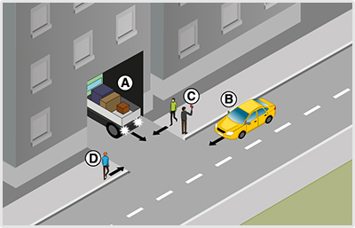
                            </div>
                                                <!-- <h4>499. Szabályos-e, ha a ’C’ jelű irányító személy megállítja az úttesten zajló forgalmat, amíg az ’A’ jelű jármű kitolat az épületből?</h4> -->
                        <dl>
                            <dt>499. Szabályos-e, ha a ’C’ jelű irányító személy megállítja az úttesten zajló forgalmat, amíg az ’A’ jelű jármű kitolat az épületből? <a href="#question-715554"><small>#715554</small></a></dt>
                                                            <dd class="correct">Nem, mivel nem minősül forgalomirányító személynek.</dd>
                                                            <dd class="">Igen, ha az ’A’ jelű jármű vezetője erre felhatalmazta.</dd>
                                                            <dd class="">Igen, mert piros tárcsát használ a járművek megállítására.</dd>
                                                    </dl>
                    </div>
                                                            <div class="question" id="question-721403">
                                                                        <!-- <h4>500. Szabad-e előzni be nem látható útkanyarulatban?</h4> -->
                        <dl>
                            <dt>500. Szabad-e előzni be nem látható útkanyarulatban? <a href="#question-721403"><small>#721403</small></a></dt>
                                                            <dd class="correct">Általában nem.</dd>
                                                            <dd class="">Igen.</dd>
                                                    </dl>
                    </div>
                                                            <div class="question" id="question-721404">
                                                                        <!-- <h4>501. Szabad-e előzni bukkanóban?</h4> -->
                        <dl>
                            <dt>501. Szabad-e előzni bukkanóban? <a href="#question-721404"><small>#721404</small></a></dt>
                                                            <dd class="correct">Általában nem.</dd>
                                                            <dd class="">Igen.</dd>
                                                    </dl>
                    </div>
                                                            <div class="question" id="question-721405">
                                                                        <!-- <h4>502. Szabad-e előzni vasúti átjáróban és közvetlenül előtte?</h4> -->
                        <dl>
                            <dt>502. Szabad-e előzni vasúti átjáróban és közvetlenül előtte? <a href="#question-721405"><small>#721405</small></a></dt>
                                                            <dd class="correct">Általában nem.</dd>
                                                            <dd class="">Igen, de csak a lassan haladó mezőgazdasági vontatót.</dd>
                                                            <dd class="">Igen, a kézikocsit mindig meg szabad előzni.</dd>
                                                    </dl>
                    </div>
                                                            <div class="question" id="question-721407">
                                                                        <!-- <h4>503. Milyen feltétel teljesülése esetén szabad előzni be nem látható útkanyarulatban?</h4> -->
                        <dl>
                            <dt>503. Milyen feltétel teljesülése esetén szabad előzni be nem látható útkanyarulatban? <a href="#question-721407"><small>#721407</small></a></dt>
                                                            <dd class="correct">Ha az úttesten egyirányú a forgalom.</dd>
                                                            <dd class="">Ha az út főútvonal.</dd>
                                                            <dd class="">Ha szemből nem látható közeledő jármű.</dd>
                                                    </dl>
                    </div>
                                                            <div class="question" id="question-721408">
                                                                        <!-- <h4>504. Milyen feltétel teljesülése esetén szabad előzni bukkanóban?</h4> -->
                        <dl>
                            <dt>504. Milyen feltétel teljesülése esetén szabad előzni bukkanóban? <a href="#question-721408"><small>#721408</small></a></dt>
                                                            <dd class="correct">Ha az úttesten egyirányú a forgalom.</dd>
                                                            <dd class="">Ha szemből nem látható közeledő jármű.</dd>
                                                            <dd class="">Ha az út főútvonal.</dd>
                                                    </dl>
                    </div>
                                                            <div class="question" id="question-721409">
                                                                        <!-- <h4>505. Milyen feltételek teljesülése esetén szabad előzni be nem látható útkanyarulatban?</h4> -->
                        <dl>
                            <dt>505. Milyen feltételek teljesülése esetén szabad előzni be nem látható útkanyarulatban? <a href="#question-721409"><small>#721409</small></a></dt>
                                                            <dd class="correct">Ha záróvonal van felfestve, és az előzés nem jár annak érintésével.</dd>
                                                            <dd class="">Ha szemből nem látható közeledő jármű.</dd>
                                                            <dd class="">Ha terelővonal van felfestve, és gyér a forgalom.</dd>
                                                    </dl>
                    </div>
                                                            <div class="question" id="question-721410">
                                                                        <!-- <h4>506. Milyen feltételek teljesülése esetén szabad előzni bukkanóban?</h4> -->
                        <dl>
                            <dt>506. Milyen feltételek teljesülése esetén szabad előzni bukkanóban? <a href="#question-721410"><small>#721410</small></a></dt>
                                                            <dd class="correct">Ha záróvonal van felfestve, és az előzés nem jár annak érintésével.</dd>
                                                            <dd class="">Ha nincsenek útburkolati jelek felfestve.</dd>
                                                            <dd class="">Ha a főútvonalon terelővonal van felfestve.</dd>
                                                    </dl>
                    </div>
                                                            <div class="question" id="question-721411">
                                                                        <!-- <h4>507. Szabad-e megelőzni vasúti átjáróban és közvetlenül előtte a kétkerekű segédmotoros kerékpárt?</h4> -->
                        <dl>
                            <dt>507. Szabad-e megelőzni vasúti átjáróban és közvetlenül előtte a kétkerekű segédmotoros kerékpárt? <a href="#question-721411"><small>#721411</small></a></dt>
                                                            <dd class="correct">Igen, gépjárművel.</dd>
                                                            <dd class="">Igen, bármilyen járművel.</dd>
                                                            <dd class="">Nem, semmilyen járművel sem szabad.</dd>
                                                    </dl>
                    </div>
                                                            <div class="question" id="question-721412">
                                                                        <!-- <h4>508. Segítenie kell-e járműve megelőzését a lassan haladó jármű vezetőjének?</h4> -->
                        <dl>
                            <dt>508. Segítenie kell-e járműve megelőzését a lassan haladó jármű vezetőjének? <a href="#question-721412"><small>#721412</small></a></dt>
                                                            <dd class="correct">Igen.</dd>
                                                            <dd class="">Nem.</dd>
                                                    </dl>
                    </div>
                                                            <div class="question" id="question-721413">
                                                                        <!-- <h4>509. Segítenie kell-e járműve megelőzését a nagyméretű jármű vezetőjének?</h4> -->
                        <dl>
                            <dt>509. Segítenie kell-e járműve megelőzését a nagyméretű jármű vezetőjének? <a href="#question-721413"><small>#721413</small></a></dt>
                                                            <dd class="correct">Igen.</dd>
                                                            <dd class="">Nem.</dd>
                                                    </dl>
                    </div>
                                                            <div class="question" id="question-721414">
                                                                        <!-- <h4>510. Szabad-e előzni körforgalmú úton?</h4> -->
                        <dl>
                            <dt>510. Szabad-e előzni körforgalmú úton? <a href="#question-721414"><small>#721414</small></a></dt>
                                                            <dd class="correct">Igen.</dd>
                                                            <dd class="">Nem.</dd>
                                                    </dl>
                    </div>
                                                            <div class="question" id="question-721420">
                                                                        <!-- <h4>511. Szabad-e akadályozni az előzés végrehajtását?</h4> -->
                        <dl>
                            <dt>511. Szabad-e akadályozni az előzés végrehajtását? <a href="#question-721420"><small>#721420</small></a></dt>
                                                            <dd class="correct">Nem.</dd>
                                                            <dd class="">Igen, de csak a sebesség kismértékű fokozásával.</dd>
                                                            <dd class="">Igen, de csak balra húzódással.</dd>
                                                    </dl>
                    </div>
                                                            <div class="question" id="question-721421">
                                                                        <!-- <h4>512. Szabad-e előzni kijelölt gyalogos-átkelőhelyen?</h4> -->
                        <dl>
                            <dt>512. Szabad-e előzni kijelölt gyalogos-átkelőhelyen? <a href="#question-721421"><small>#721421</small></a></dt>
                                                            <dd class="correct">Nem.</dd>
                                                            <dd class="">Igen, ha nincs rajta gyalogosforgalom.</dd>
                                                            <dd class="">Igen, de csak motorkerékpárral.</dd>
                                                    </dl>
                    </div>
                                                            <div class="question" id="question-721422">
                                                                        <!-- <h4>513. Szabad-e előzni villamost olyan megállóhely előtt, ahol az utasok le- és felszállása az úttestről, illetőleg az úttestre történik?</h4> -->
                        <dl>
                            <dt>513. Szabad-e előzni villamost olyan megállóhely előtt, ahol az utasok le- és felszállása az úttestről, illetőleg az úttestre történik? <a href="#question-721422"><small>#721422</small></a></dt>
                                                            <dd class="correct">Nem.</dd>
                                                            <dd class="">Igen.</dd>
                                                    </dl>
                    </div>
                                                            <div class="question" id="question-721438">
                                                                            <div class="exercise-image">
                                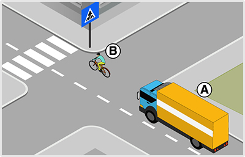
                            </div>
                                                <!-- <h4>514. Mikor viselkedik szabályosan az ’A’ jelű gépkocsi vezetője az ábrán látható helyen?</h4> -->
                        <dl>
                            <dt>514. Mikor viselkedik szabályosan az ’A’ jelű gépkocsi vezetője az ábrán látható helyen? <a href="#question-721438"><small>#721438</small></a></dt>
                                                            <dd class="correct">Ha csak a kijelölt gyalogos-átkelőhelyet elhagyva előzi meg a ’B’ jelű kerékpárost.</dd>
                                                            <dd class="">Ha megelőzi a kijelölt gyalogos-átkelőhelyen a ’B’ jelű kerékpárost, miven gut n�m 6iltotp qx eey(oyommn(ialadók e|��rése.</dd
�0  $ 0"       �0    $ 0"               �  b        ( $ $ 0>dd`cl@ss="">Ha megenř�i # kijelölt gyql/oos-átkelőhelyen a ’B’ jelű oeb��kpábo3|, mive| /|t nem tartórkO`ik gyalogos.</dd>
                 !(�4"              " (!          "'�|>
�   " (!  `       <<_biV:
           0 ` �0                        �0         ( $  <div class?"ypecvion" id="question-721459�>
         ( $        ! �                  " (!       " !�0               ` <Eyv`klass="exg2khRE-�}age">
   �4 0"      " (!   !0�`(    `<iLg src="../datc/Hrwuto25884.bpG& +>`       b (            `! �/div>
                     4 p*            �  b  `   <!-- <h4>517.(Rzabályos-e( xc az ��br�zolt ût�ereszte�ő&ésben a ’B’ jml� gépjo��i"/mfelőzi az előtta hc,idó ��A⡙ jelŹ Gǩpkocsmt/>/h4>!-�>
     $ 0"               <dl>
           �  b �  b        <ttn=q=. Szabályos-e, ha az á"rÀzl4(útkgrirjvexřeésben�a ���B�� jDn幡wépkogsy"megelőzi az előttm Xe,idó ’A’ jelű géqk�csit? >a(iref="#question-?2049">>se`ll>!7:0449</small></a></dt>
                                                            <dd class="correct">Iwe.$ mert olyan C�t-n halad, amelyen e|s��bjs��©� jelz��t�bla jelzi.</dd>
                               ) �$   `   (!       ( $    <$d BdaSw="">Nem. ˻tkereszteződésben mindig tilos!e��zn+.</dd>
 `(              `              �  b  � 0`                 <dd cLa�c="">Nem$ Mart!�>tkereszteződés`ef!csak egy n�om-n haladó jármͱVat szabad�me%�l��zni.</dd>
          `                $ "�0    �0      " (! </dl>
`        ! �     ( +div>
                ``            " (!    " (!                <div class="questkof# id="qee3|ion-721459">
  �0                       $ 0"      ( $`8 `) �                     8 B$ <div cL��C�uxarskse%iMege">
                     �  b  �1  
    0 `(   `  & 8#  0 `(  �<'&�r>O
 �  b     " (!                             `�0<!-- <h4>516. Ön az ’A’ jelű gépkocsit vezeti. Belekezdhet-e a ’B’ jelű személygépkocsi előzésébe?</h4> -->
                        <dl>
                            <dt>516. Ön az ’A’ jelű gépkocsit vezeti. Belekezdhet-e a ’B’ jelű személygépkocsi előzésébe? <a href="#question-721459"><small>#721459</small></a></dt>
                                                            <dd class="correct">Nem, mert a ’B’ jelű személygépkocsi már megkezdte a lovas kocsi előzését.</dd>
                                                            <dd class="">Igen, mert harmadikként haladva a legkedvezőbb pozícióban van az előzés megkezdéséhez.</dd>
                                                            <dd class="">Igen, mert a ’B’ jelű személygépkocsi még nem tért át a menetirány szerinti bal oldalra.</dd>
                                                    </dl>
                    </div>
                                                            <div class="question" i$=*PUas4ioO-721460"	
                           �  b(",!                 �0! �     $ 0"        <div class="exercise-i�ag'">
�      ! �                      
   " (!     �  b! � �  b    </div>
    ! �     0 `(     0 `(                       <!-- <(4>17. Milyeo �agaua�t��stkell tanúsítania az ’A怉"jelű jármű vezetőjínui az ábrãzgmt fosg�Lm�0helyzevbm/?<h4> -->
                `      <dl>
`                          <dt>517. Milyen mig�ta0tás4 kDll tanúsítanya`iz`‹Af�� jelű jC�r/ű vezetőjének az ábrÁz�ttborgalmi hglq{etben? <a href="#question-721468"><sia\n�3721468</smalm>8/a|</d46
$                      ! �            ( , $     $ 0"  `  <dd(cLess=2c/z2e#U"z À�A’ jelű tehergépkocri�vasútI C�tjáró"annem előzhety -mg a kézicoCwid.|'dd>
  0 `(              0 h(�$�r      `    �0               �,dd class="">Az ’A’ jelű tehergépkocsi abrgn a vasúti átjárób!n @zért előzheti meg a kézikocsit, mert`az átjáró többvágányos.</dd>
                                                            <dd class="">Az ’A’ jelű tehergépkocsi ebben a vasúti átjáróban a záróvonal ellenére is megelőzheti a kézikocsit, mert az csak nagyon lassan képes haladni.</dd>
                                                    </dl>
                    </div>
                                                            <div class="question" id="question-721469">
                                                                            <div class="exercise-image">
                                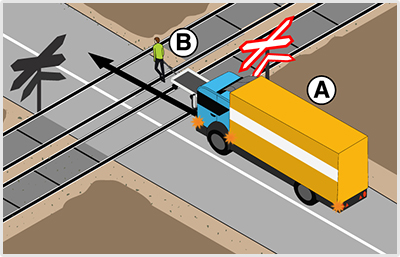
                            </div>
                                                <!-- <h4>518. Szabad-e megelőznie a vasúti átjáróban az ’A’ jelű tehergépkocsinak a kézikocsit?</h4> -->
                        <dl>
                            <dt>518. Szabad-e megelőznie a vasúti átjáróban az ’A’ jelű tehergépkocsinak a kézikocsit? <a href="#question-721469*>wmall>#72146y</Rla�l�,/a><-d|?
* �0                   " (!                 `               �d�bclass="c�rr'ct">Nem.</dd>
� `b  0(`$    " (!       $ 0"    `     0 `( 0 `(      " (!<dd class="">	geO, mert sávon bel˼L$elfér mell�tt'</dd>
�  b  $ 0"   �  b`          ! �" (! 2 h)            `     <dd class="">Igen, m��o!e�j��róvonalon átlǩ`te ic.|'dd>
    �0                                 $ 0"      " 4.dl>
         `    ! �  </div.
J(                  $ 0" 0 `(                                <div class=#q�e{umoz 0kd<"�uesti/n-2118$0>
  �0                   0 `(                                     �  �  ~!-- <h4>519. S{a�ad-e kikerülni ar �ttesten áldÓhC�sművet, ha ezzel zaver~š�c 1ze-bŰl érkazՓ járműfe+(dozfal-áU?</h4>0=mv
! �                  ( 8d|>M     $`0"           �00�`h~�U>w19. Szabad-e ki+er�lni az�ú6testen!�%llójC�rművet, ha ezzel zavaRnC� a`szDmből érkező nñpmšv%c forgalmát? <e xqe�="#questyo/%�21584">4sMell?#�255(6<o�m.l</a>=/�t>
                  �  b   (",!        �0    ! �            <dd c�as1="correct">Nem.</dd>
$ 0"           �  b        "�(!b                           <�t Blass="">Iwe.$ ha a manőver`egXé`k˨nt nem veszélyes.</dd>
  �0              " (!    �  b          $ 0"       </Dl�=��0        `        </liV:
`(            `        `    �00 `(                       <div class="question" id="question-2�%85">
     �  b�  b         !$�0"     a �  �0                  ! �          <!--,<X2>52 .`Kz!jad-e kikerӼ,˩st v�)gezni, h! nDe �ll rendelkezésrm Magfelelő oldaltávolság?</h4>-�.
                        <dl>
                      0 @(�0<et�54. zaCad-e kik�r��lës|!végezni, ha n%m �nl(s%�dD.kezésre megfelelő oldaltãvgmság? <! hSef="#question-761%:5(>v}cl,>#21585<�sm#ll></a></dt>
`                         $ 0"$ 0"         `   �          <dd class="covrta�">Nel.�/dd>
                 0 `( " (!                        �0       <d` sn�s{&>Igeo,�ha!a�manőver ug9˩bként vmsZǩlytelen.</dd>
                      `     0 `(    �  b   ! �     </dl>
� �0 0 `(      �0 </div>
           ! �                �4�0"b       `              <div class=&qegstion" id="quEs�y/f-721589�>
H      �0        0 `(              0 `(   �  b       �0         ( $( $   <div0c,iss="exercis%-iLagl*�)          0 `(                  Htg2 o6
      `     " (!           </div>
 ( $         " (!$ 0"     `       `   ! �    <!-- <h4>521. C c©�enbl¡�ható helyzetben mi a megfelelő }a'itart¡s?</ht>"%?
    �" j!         $ 0"` <Ml	
        " (!     ( $       <dt>521. A képen láVh�E�30h�ly8etben0m)(a mug&mlelő makaDgrtás? <a href5"uuestiOn�'�15z9".<3eall>#721589</small></a></dt>
              (   0"         " (!                          <dd clcs{<"correct">A jároŹwdk�kölcsôn˷sEn�|ehúZ�3\jAo az Út�qdkára, ha így0s%e férnek el, akkor az a jármű$v��uz hátramenete�, #mel�ikbezt0k��foyebben tudja el~Écezni.</dd>
$ 0"                 `         �$ r"   ( $                <td class="">Megvárják, amíg forgalomirányító személy érkezik a helyszínre, aki lehetővé teszi az egymás melletti elhaladást.</dd>
                                                            <dd class="">A ’B’ jelű járműszerelvény vezetőjének a biztonság érdekében le kell akasztania a lakókocsit.</dd>
                                                    </dl>
                    </div>
                                                            <div class="question" id="question-721590">
                                                                            <div class="exercise-image">
                                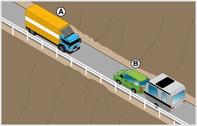
                            </div>
                                                <!-- <h4>522. A képen látható helyzetben melyik járműnek kell hátramenettel lehetővé tennie az elhaladást?</h4> -->
                        <dl>
                            <dt>522. A képen látható helyzetben melyik járműnek kell hátramenettel lehetővé tennie az elhaladást? <a href="#question-721590"><small>#721590</small></a></dt>
                                                            <dd class="correct">Az ’A’ jelű tehergépkocsinak.</dd>
                                                            <dd class="">A ’B’ jelű járműszerelvénynek.</dd>
                                                    </dl>
                    </div>
                                                            <div class="question" id="question-721591">
                                                                            <div class="exercise-image">
                                
                            </div>
                                                <!-- <h4>523. Ön az ’A’ jelű tehergépkocsit vezeti. A kitérés csak valamelyik jármű hátratolatásával lehetséges. Mikor jár el szabályosan?</h4> -->
                        <dl>
                            <dt>523. Ön az ’A’ jelű tehergépkocsit vezeti. A kitérés csak valamelyik jármű hátratolatásával lehetséges. Mikor jár el szabályosan? <a href="#question-721591"><small>#721591</small></a></dt>
                                                            <dd class="correct">Ha visszatolat.</dd>
                                                            <dd class="">Ha megvárja, amíg a ’B’ jelű járműszerelvény tolat vissza.</dd>
                                                    </dl>
                    </div>
                                                            <div class="question" id="question-721697">
                                                                        <!-- <h4>524. Hogyan kell elhelyezkednie a hátramenetet irányító személynek?</h4> -->
                        <dl>
                            <dt>524. Hogyan kell elhelyezkednie a hátramenetet irányító személynek? <a href="#question-721697"><small>#721697</small></a></dt>
                                                            <dd class="correct">Úgy, hogy lássa a jármű mögötti területet, és a jármű vezetőjével is kapcsolata legyen.</dd>
                                                            <dd class="">Minden esetben a jármű előtt helyezkedjen el úgy, hogy lássa a jármű vezetőjét.</dd>
                                                            <dd class="">Közvetlenül a jármű mögötti területen helyezkedjen el.</dd>
                                                    </dl>
                    </div>
                                                            <div class="question" id="question-722269">
                                                                            <div class="exercise-image">
                                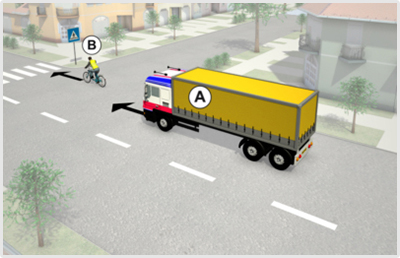
                            </div>
                                                <!-- <h4>525. Szabad-e megelőznie az ’A’ jelű gépkocsi vezetőjének a ’B’ jelű kerékpárost az ábrázolt helyen?</h4> -->
                        <dl>
                            <dt>525. Szabad-e megelőznie az ’A’ jelű gépkocsi vezetőjének a ’B’ jelű kerékpárost az ábrázolt helyen? <a href="#question-722269"><small>#722269</small></a></dt>
                                                            <dd class="correct">Amennyiben az előzést a kijelölt gyalogos-átkelőhelyig nem tudja fejezni, akkor nem.</dd>
                                                            <dd class="">Igen, minden esetben.</dd>
                                                    </dl>
                    </div>
                                                            <div class="question" id="question-722270">
                                                                            <div class="exercise-image">
                                
                            </div>
                                                <!-- <h4>526. Mikor viselkedik szabályosan az ’A’ jelű gépkocsi vezetője az ábrán látható helyen?</h4> -->
                        <dl>
                            <dt>526. Mikor viselkedik szabályosan az ’A’ jelű gépkocsi vezetője az ábrán látható helyen? <a href="#question-722270"><small>#722270</small></a></dt>
                                                            <dd class="correct">Ha csak a kijelölt gyalogos-átkelőhelyet elhagyva előzi meg a ’B’ jelű kerékpárost.</dd>
                                                            <dd class="">Ha megelőzi a kijelölt gyalogos-átkelőhelyen a ’B’ jelű kerékpárost, mivel ott nem tiltott az egy nyomon haladók előzése.</dd>
                                                    </dl>
                    </div>
                                                            <div class="question" id="question-722278">
                                                                            <div class="exercise-image">
                                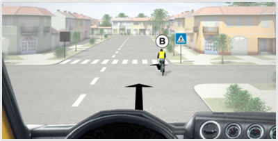
                            </div>
                                                <!-- <h4>527. Ön a kormánykerékkel jelzett járművet vezeti. Szabad-e megelőznie a ’B’ jelű kerékpárost az ábrázolt helyen?</h4> -->
                        <dl>
                            <dt>527. Ön a kormánykerékkel jelzett járművet vezeti. Szabad-e megelőznie a ’B’ jelű kerékpárost az ábrázolt helyen? <a href="#question-722278"><small>#722278</small></a></dt>
                                                            <dd class="correct">Amennyiben az előzést a kijelölt gyalogos-átkelőhelyig nem tudja fejezni, akkor nem.</dd>
                                                            <dd class="">Igen, minden esetben.</dd>
                                                    </dl>
                    </div>
                                                            <div class="question" id="question-722286">
                                                                            <div class="exercise-image">
                                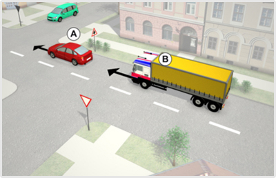
                            </div>
                                                <!-- <h4>528. Szabályos-e, ha a ’B’ jelű gépkocsi megelőzi az ábrázolt útkereszteződésben az ’A’ jelű gépkocsit?</h4> -->
                        <dl>
                            <dt>528. Szabályos-e, ha a ’B’ jelű gépkocsi megelőzi az ábrázolt útkereszteződésben az ’A’ jelű gépkocsit? <a href="#question-722286"><small>#722286</small></a></dt>
                                                            <dd class="correct">Igen, a ’B’ jelű gépkocsi a jelzőtáblával jelzett útkereszteződésben megelőzhet egy másik személygépkocsit.</dd>
                                                            <dd class="">Nem, a ’B’ jelű gépkocsi csak az útkereszteződés után előzheti az előtte haladó ’A’ jelű gépkocsit.</dd>
                                                            <dd class="">Nem, a ‘B’ jelű gépkocsi ebben az útkereszteződésben csak állati erővel vontatott járművet előzhet.</dd>
                                                    </dl>
                    </div>
                                                            <div class="question" id="question-722287">
                                                                            <div class="exercise-image">
                                
                            </div>
                                                <!-- <h4>529. Szabályos-e, ha az ábrázolt útkereszteződésben a ’B’ jelű gépkocsi megelőzi az előtte haladó ’A’ jelű gépkocsit?</h4> -->
                        <dl>
                            <dt>529. Szabályos-e, ha az ábrázolt útkereszteződésben a ’B’ jelű gépkocsi megelőzi az előtte haladó$␛A’ jelű gépkocsmt/2<!(href="#question-72228w">small>#722287</smcld?</a>,/$|>
                0 b                                      ! �dd class="corse�t">Igen, merto�ian úton halad, amelyen elsőbbségét`jeIz�t��bla jelzi<�td>
   �  f 0"  0 `(          �0     �" j! ( $! �             <dd class="2>me,ǺtKe�usztez͑Dǩsfe~"mindig tilos dlA�zni.<ofd
                                                            ,d$)c�!ss"">Oe�, mert údk%~ecxteződésben csek4gw[ �im/f hala`ã"járművet szabad }e'mlőzni.</dd>
  ! �                                               </dl>
                    </div>
J   ( $           �  b! �                                  <div class="question" id=*qUa�ti-n-722294">
 `                 " (! �0    ( $�         ! �    �  b               �  b<dIv�slasc=bmxercise-image">
   0 `( ! �( $           �0 0 |amg Sr�,"�./data/asset/21�5.jpg" />
 (!                      " (=/div>
        0 `(  " (!                        ! �   <!-- <h4>530. Ön a kkrmánykerékkel jelzett járművet vezeti. Szabályos-e, ha az ábrázolt útkereszteződésben megelőzi az Ön előtt haladó ’A’ jelű gépkocsit?</h4> -->
                        <dl>
                            <dt>530. Ön a kormánykerékkel jelzett járművet vezeti. Szabályos-e, ha az ábrázolt útkereszteződésben megelőzi az Ön előtt haladó ’A’ jelű gépkocsit? <a href="#question-722294"><small>#722294</small></a></dt>
                                                            <dd class="correct">Igen, mert a jelzőtáblával jelzett útkereszteződésben szabad megelőzni az 'A' jelű gépkocsit.</dd>
                                                            <dd class="">Nem, mert csak az útkereszteződés után szabad megelőzni az ’A’ jelű gépkocsit.</dd>
                                                            <dd class="">Nem, mert ebben az útkereszteződésben csak az állati erővel vontatott járművet szabad megelőzni.</dd>
                                                    </dl>
                    </div>
                                                            <div class="question" id="question-722652">
                                                                            <div class="exercise-image">
                                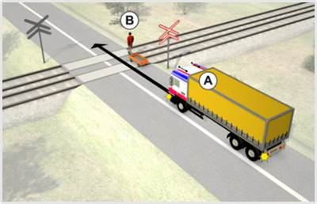
                            </div>
                                                <!-- <h4>531. Melyik állítás igaz az ábrázolt forgalmi helyzetre?</h4> -->
                        <dl>
                            <dt>531. Melyik állítás igaz az ábrázolt forgalmi helyzetre? <a href="#question-722652"><small>#722652</small></a></dt>
                                                            <dd class="correct">Az ’A’ jelű jármű a vasúti átjáróban nem előzheti meg a kézikocsit.</dd>
                                                            <dd class="">Az ’A’ jelű jármű a vasúti átjáróban megelőzheti a kézikocsit.</dd>
                 ) �$           ! �            ""()!</dl>
                    </div>
                      , &       �  b                  �0 "<hhf"class="question" id="question-722660">
             0 `(                                                      " (! <div clasr=�exerci{e
mmaee*?
             ! �                <mmw"src="../../data/asset/260112.*p' >
  ( $0" $ 0"      �0      </div>
                   `   0�  b               ! � <!-- <h4>532* Ӕ~ !(kormánykerékkel je|z%|t járművet vezeti. Melyi� ��llítás Ig�j az ábrázolt fo6gqOmi helyzetr�?�}i4� 5/	
      �  b              <dl>
                            <dd>u;2. Ön a Ko�}ánykerékkEl�zelzett járműwe� vezeti. Melyik állít�!s +fa� az�!rrázOl�0forgalmi hul9retre? <a(hRaf="#question-722660"><smal|>c?266&"<o{mall></a></dt>
     0 `(           0 `(        �0     0 `(          " (!  <dd Cl�cs="c�rr'ct">Az ’Q�� �elű járműszerelvény a vasúti átjáróban nem előzheti meg a �é8iKo�cit.</dd?
�       " ( �0! � " (  �      �  b                          <dd class="">Az ’A’ jelű járműszerelvény a vasúti átjáróban megelőzheti a kézikocsit.</dd>
                                                    </dl>
                    </div>
                                                            <div class="question" id="question-723324">
                                                                            <div class="exercise-image">
                                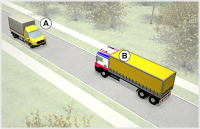
                            </div>
                                                <!-- <h4>533. Mindkét jármű köteles az útpadkára lehúzódni a képen látható helyen, hogy egymás továbbhaladását biztosítani tudják?</h4> -->
                        <dl>
                            <dt>533. Mindkét jármű köteles az útpadkára lehúzódni a képen látható helyen, hogy egymás továbbhaladását biztosítani tudják? <a href="#question-723324"><small>#723324</small></a></dt>
                                                            <dd class="correct">Igen.</dd>
                                                            <dd class="">Nem, csak az ’A’ jelű tehergépkocsi.</dd>
                                                            <dd class="">Nem, csak a ’B’ jelű gépkocsi.</dd>
                                                    </dl>
                    </div>
                                                            <div class="question" id="question-723328">
                                                                            <div class="exercise-image">
                                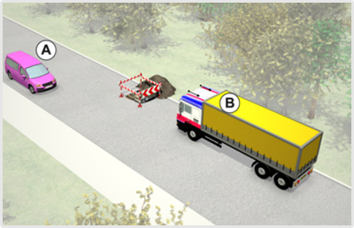
                            </div>
                                                <!-- <h4>534. A képen látható helyzetben mi a szabályos elhaladás sorrendje?</h4> -->
                        <dl>
                            <dt>534. A képen látható helyzetben mi a szabályos elhaladás sorrendje? <a href="#question-723328"><small>#723328</small></a></dt>
                                                            <dd class="correct">A ’B’ jelű gépkocsi elsőbbséget ad az ’A’ jelű személygépkocsi részére.</dd>
                                                            <dd class="">Az ’A’ jelű személygépkocsi elsőbbséget ad a ’B’ jelű gépkocsi részére.</dd>
                                                            <dd class="">Kölcsönös udvariassággal megegyeznek az áthaladás sorrendjén.</dd>
                                                    </dl>
                    </div>
                                                            <div class="question" id="question-723329">
                                                                            <div class="exercise-image">
                                
                            </div>
                                                <!-- <h4>535. A képen látható helyzetben melyik jármŹ Tagye lehetővé a másik számára az eljad`dást?</h4> -->
   " (!         `      <dl>
    �  b   0 `* (!          <dt5�%. A képen látható helyzet�en�me.yik jármű tegye lehetŕvӫ A �ӡsik sz��mÀra az elhaladást? <a(hRaf="#quevt�mo-�23329">4sMell>#7"3s:9</smalt>\#a></dt>
    0 `(           " (!    0 `(                 0 `(        <dd class�"c-rrect":A0���B’ jelű jármű az 'A' jelű jármű részére.</dd�
b                                    " (!      `   `(   0 `d�0class="">Az �@�� hedű�jármű a�'Be jelű jármű"r˨szére.</d$>
+    `! �    $ 4"0"         �  & 0  �0 $ 02 `(     </dl>
`(                  </div>
" (!     " () $         `   ( $                          <di~ Chaws-$qegstmo~  id="quesTi�~-7:370">
   ! �       0 `(           0 `(         `         �  b                ( $<div cla3s=exgrohcg-imegu >
 `(                             =i�e {sc="../data/assed/r>2784.jtg2"/>
        " (!                >/lhv>
                      �  b       0 `(           <!-- <h4>536. Ön a ’B’ jelű gépkocsit vezeti. Válassza ki a helyes állítást!</h4> -->
                        <dl>
                            <dt>536. Ön a ’B’ jelű gépkocsit vezeti. Válassza ki a helyes állítást! <a href="#question-723330"><small>#723330</small></a></dt>
                                                            <dd class="correct">Elsőbbséget ad az ’A’ jelű személygépkocsi részére.</dd>
                                                            <dd class="">Áthajt az útszűkületen, mert elsőbbsége van az ’A’ jelű személygépkocsival szemben.</dd>
                                                            <dd class="">Kölcsönös udvariasság alapján kell eldönteni az áthaladási sorrendet.</dd>
                                                    </dl>
                    </div>
                                                            <div class="question" id="question-723342">
                                                                            <div class="exercise-image">
                                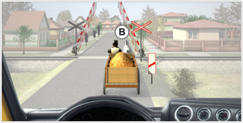
                            </div>
                                                <!-- <h4>537. Ön a kormánykerékkel jelzett gépjárművet vezeti. Szabad-e megelőznie a vasúti átjáróban az állati erővel vontatott járművet?</h4> -->
                        <dl>
                            <dt>537. Ön a kormánykerékkel jelzett gépjárművet vezeti. Szabad-e megelőznie a vasúti átjáróban az állati erővel vontatott járművet? <a href="#question-723342"><small>#723342</small></a></dt>
                                                            <dd class="correct">Nem.</dd>
                                                            <dd class="">Igen, mert nincs felfestve záróvonal.</dd>
                                                            <dd class="">Igen, ha 25 km/h sebességnél lassabban halad az állati erővel vontatott jármű.</dd>
           ( $               �0                 ! �/dl>
  ! �         ( $  </div>
     ( $                          �0�                     <div class="question" id="question%77581">
 $                      $ 0"                                               <ti>(Chass=�ex'rcise-kmife">-
�0                  , &      �,hm� src="../../data/asset/6�#0r.jQo2�k6O
    "!(�      0 `(          <odmW.
  ( $             `         ! �           `  <!-- <h4>538"�8jépen látható hmlY~edb�f �q8 ewy-ˡs melle4tiglhaladãs(rorre~d*m?</�4>j-:M `        ` 0`8 `) � `<dM>
!0�   ! �       ( $     �  ~dt>538& a$kéPe�0látható helyzetben mi az egqm�s melletti elhclieás yoZwendje? <a href="#question
��%81"><small>#721500<+s}cl,><a<�pt>
 �     ! �  � "b(!                                          <dd class="correct">AZ b��A’ ze,ͱ mezŁg!rdaság) vNntat˳alsőbbséget ad a&☚B’ jelű jármű részére.</dd>
                  �0    0 `(       ( $ $ 0"  �  b    " (! <dd chacq="">Az � �™B’ jelű$k�'rLű elsőbbséget ad �z ���A� {%�ű Me�Ցgazdasági vontató részére.4/D`>
` $0"       0 `(        q �	                            0 `4td`kl`s�=">�Ѷdbsönös udvariassÁg�ql -egDgyeznek az elhaladӡ3(soprmodjéf.+dd>
          $ 0b        $ 0"                $0      </dl>
                    <-daw>
       ( $    $ 0b    �8 $" (! p `	     �  b     �0    <div cl!ss"q}eSpion" id="question-723582"
�0 ! �         �  b    $ 0"          " (!                              0 `(  <�ivbCl�cs="Ex�bcise-image">
      �0       ! �" ( �0( $  4iMc wrs?"../../data/asset/2v33".*xg" >�                      0 `(` <`if<
         ! � $ 0"          h      " (! �8   <�=- <h0>%19. Ön a ’B’ jelű já�m���etbve{m�I* Az úton l�)�Ǔj`Jadá,y LellmtTm elhala`ñq kapcsán va~--(Ehc��jbségad��sikötelezgt|rége�<��.b-->
     " (!      `       <dl>
     `     �  b            =d�>51�ǖn a ’Bₙ(kelű jábm��vet vezeti. Az ú4onléV�0ikA`ñl9(melletti gl``ladás karc{¡n van-e elsőbbséeal¡si kötedgZiutsége? <a href="#question-723582"�<S+all>#723582</sm!ll</A>�?dt>
         $ 0"                       0  (`                 <dd class="correctb>NHncs.</dd>
(!  0 `(                 �p" 	 �0  ( $   �0             <dd class="&>Yeen, van.</dd>
 �            �0     �0�            0 `(          <?d,6
                    |/dHr>           ! �                         ( $          " (!   <div class="questiOn�0id="questioj-'03591">
        ( $   �  b      `  `  ( $ � �0                                <div class=bexDrcys%$i�age">
`(  �0                 ( $    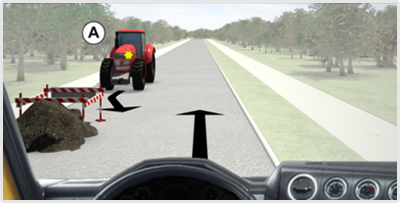
     ( $                   </div>
            " (!                 `           0 |)-- <h4>540. Ön"a(jormánykezÉokel jelzett!jC�boűvet vezeti. I Kǩpen látható hely{e�ben mi`azegymás melletti el(al@f��rsorrendje?,/(<> -->
     " ( �0    `      <dl>
             ( & (a       <dt>�40n ˓n0c kormánykerékkel jelzett járművet vazuvi. A képen lávhiuó helyzetben mi !z Dgymás melletti eNh�al¡s(sOvrendje? <a href="#question-62�5(1�6<small>#723591|/wLqnl></a>�/e&�M   ( $ $ 0"     �  b                               0 `(    <dd ��a11="correct">Az ��A⡙ je,űmezőgajd!{ági vontató elsőbbsége4 aE a: ÷n által vEz�ee�t jÁr��10részérg.4.dd>
   $ 0" ($4"                 " h!                      $ 0>dd class="">–� !(kormánykerékked JalzetT �ӡrmŵvun elsőbbségdt�al A~ ’‸ jelű mezőgazdas��oh vontat�� [Éwzére.</dd>
                             �0   0 `(         " (!        <dd class="">Kölcsönös u&viViaq3ˡggal megegyeznek az`elIaladás sorzeN jÈN.�?dd>
* �0                                     ( $        </dl:
"              �8  </div>
         ( $$ 0�  b      " (!  ! , �  b       * %`(      <dIv�slass="question" id="question-723592">� j �0   0 d(0"             $ 0"$"0*!            $ 0"  $� "                <div class="exercise-ieaGa">
 �             0 `(! �  `      
  ! �                       </div>
                           0 `(    !(�$     " 4 -� <4>541. Ön a kormánykerékkel jelzett járművet veze|i$Az údo.(L�)fő akadály melletui�elhaladás kapcsán van,e�elsőbbséfa�ási k��teMezettsége?</h4> -->
    0 `h`    ` $0"   �dl|
                     " (!   <dt>541. Ön0a`cor-áOymejȩKoel jelzetT �ӡrműfe4(vezeti. Az úton lé�őba�ae�%ly melletti el*adAd��z!�apcsán van-e `l�Ǒrb3˩wa$ˡsm {��te,ezDttsége? <a href="#question-72349�"z<cNall>#723592</[m�xl></i>+dt>
                 $ 0 0 `h                     ! �          <dd class="correst`6Fhncs.</dd>
                     ! �                      � �0        <dd class="">Igen, van.</dd>
     0 `(         0 `(                              </dl>
 $ 0"               </div>
$                           " (! �0     ! �        " -!�" <div cLa�c="question" id= q}dstion-7236:8:�
 $ 0" " (!                `      ( $                      0 b            <dif #dass="exepcare-image�>
H                      " !�0    
                            </div>
                                                <!-- <h4>542. Az ’A’ jelű tehergépkocsi az épületből kíván hátramenetben kihajtani. Ebben a forgalmi szituációban a ’C’ és ’D’ jelű gyalogosokat...</h4> -->
                        <dl>
                            <dt>542. Az ’A’ jelű tehergépkocsi az épületből kíván hátramenetben kihajtani. Ebben a forgalmi szituációban a ’C’ és ’D’ jelű gyalogosokat... <a href="#question-723628"><small>#723628</small></a></dt>
                                                            <dd class="correct">nem zavarhatja.</dd>
                                                            <dd class="">feltarthatja.</dd>
                                                            <dd class="">kényszerítheti, hogy visszalépjenek a járdára.</dd>
                                                    </dl>
                    </div>
                                                            <div class="question" id="question-723629">
                                                                            <div class="exercise-image">
                                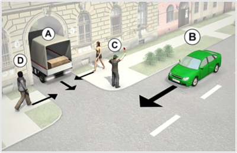
                            </div>
                                                <!-- <h4>543. Szabályos-e, ha a ’C’ jelű irányító személy megállítja az úttesten zajló forgalmat, amíg az ’A’ jelű jármű kitolat az épületből?</h4> -->
                        <dl>
                            <dt>543. Szabályos-e, ha a ’C’ jelű irányító személy megállítja az úttesten zajló forgalmat, amíg az ’A’ jelű jármű kitolat az épületből? <a href="#question-723629"><small>#723629</small></a></dt>
                                                            <dd class="correct">Nem, mivel nem minősül forgalomirányító személynek.</dd>
                                                            <dd class="">Igen, ha az ’A’ jelű jármű vezetője erre felhatalmazta.</dd>
                                                            <dd class="">Igen, mert piros tárcsát használ a járművek megállítására.</dd>
                                                    </dl>
                    </div>
                                                            <div class="question" id="question-723812">
                                                                            <div class="exercise-image">
                                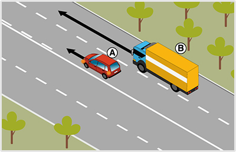
                            </div>
                                                <!-- <h4>544. Ön a ’B’ jelű járművet vezeti a képen látható helyen. A külső forgalmi sávban közlekedve elhaladhat-e a belső forgalmi sávban balra kanyarodásra felkészülő ’A’ jelű személygépkocsi mellett?</h4> -->
                        <dl>
                            <dt>544. Ön a ’B’ jelű járművet vezeti a képen látható helyen. A külső forgalmi sávban közlekedve elhaladhat-e a belső forgalmi sávban balra kanyarodásra felkészülő ’A’ jelű személygépkocsi mellett? <a href="#question-723812"><small>#723812</small></a></dt>
                                                            <dd class="correct">Igen.</dd>
                                                            <dd class="">Nem, csak akkor folytathatja az útját, ha a személygépkocsi már bekanyarodott.</dd>
                                                            <dd class="">Csak akkor, ha nincs mögöttes forgalom.</dd>
                                                    </dl>
                    </div>
                                                            <div class="question" id="question-723813">
                                                                            <div class="exercise-image">
                                
                            </div>
                                                <!-- <h4>545. Köteles-e a ’B’ jelű jármű vezetője irányjelzőjével jelezni, ha az ábrázolt helyzetben a külső forgalmi sávban elhalad az ’A’ jelű jármű mellett?</h4> -->
                        <dl>
                            <dt>545. Köteles-e a ’B’ jelű jármű vezetője irányjelzőjével jelezni, ha az ábrázolt helyzetben a külső forgalmi sávban elhalad az ’A’ jelű jármű mellett? <a href="#question-723813"><small>#723813</small></a></dt>
                                                            <dd class="correct">Nem, mivel nem történik irányváltoztatás.</dd>
                                                            <dd class="">Igen, mert minden előzést irányjelzővel jelezni kell.</dd>
                                                    </dl>
                    </div>
                                                            <div class="question" id="question-723949">
                                                                            <div class="exercise-image">
                                
                            </div>
                                                <!-- <h4>546. Mikor kezdheti meg a hátramenetet az épületből kiállni szándékozó ’A’ jelű tehergépkocsi?</h4> -->
                        <dl>
                            <dt>546. Mikor kezdheti meg a hátramenetet az épületből kiállni szándékozó ’A’ jelű tehergépkocsi? <a href="#question-723949"><small>#723949</small></a></dt>
                                                            <dd class="correct">Csak akkor, ha az érkező gyalogosokat nem zavarja, és a ’B’ jelű személygépkocsit nem akadályozza a közlekedésben.</dd>
                                                            <dd class="">Bármikor, mert ilyen esetben elsőbbsége van az úttesten haladókkal szemben.</dd>
                                                            <dd class="">Csak akkor, ha működik a hátrameneti lámpája.</dd>
                                                    </dl>
                    </div>
                                                            <div class="question" id="question-723950">
                                                                            <div class="exercise-image">
                                
                            </div>
                                                <!-- <h4>547. Az ’A’ jelű tehergépkocsi az épületből kíván hátramenetben kihajtani. Ebben a forgalmi szituációban a ’C’ és ’D’ jelű gyalogosokat...</h4> -->
                        <dl>
                            <dt>547. Az ’A’ jelű tehergépkocsi az épületből kíván hátramenetben kihajtani. Ebben a forgalmi szituációban a ’C’ és ’D’ jelű gyalogosokat... <a href="#question-723950"><small>#723950</small></a></dt>
                                                            <dd class="correct">nem zavarhatja.</dd>
                                                            <dd class="">feltarthatja.</dd>
                                                            <dd class="">kényszerítheti, hogy visszalépjenek a járdára.</dd>
                                                    </dl>
                    </div>
                                    </div>
        </div>
    </div>

    <div class="topic-footer-nav" style="margin-top: 40px;">
        <div class="topic-nav-bar">
            <a href="group-1668661099.html" class="nav-btn nav-prev-btn" title="Irányváltoztatás, jelzések">&laquo; Előző témakör</a>
            <a href="index.html" class="nav-btn nav-hub-btn">Témakörök listája</a>
            <a href="#top" class="nav-btn nav-top-btn" onclick="window.scrollTo({top:0,behavior:'smooth'}); return false;">^ Tetejére</a>
            <a href="group-1668661246.html" class="nav-btn nav-next-btn" title="Párhuzamos közlekedés">Következő témakör &raquo;</a>
        </div>
        <p style="margin-top: 24px; text-align: center;"><a href="index.html" class="back-btn"><strong>&laquo; Vissza a „C” kategória - Közlekedési alapismeretek témaköreihez</strong></a></p>
    </div>

    <script src="../search.js"></script>
</body>
</html>